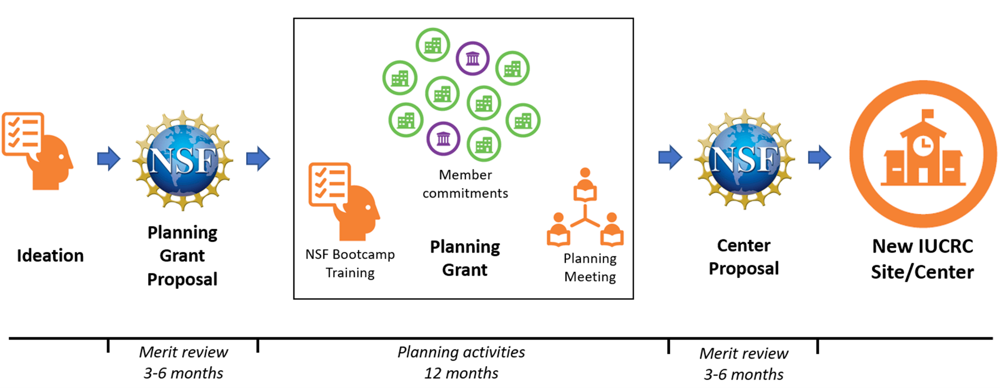

An IUCRC is an industry/university cooperative research center funded in part by the National Science Foundation (NSF) and largely by industry members, with the following objectives:
The IUCRC model has been in use for almost fifty years. There are over 70 IUCRCs in operation today, involving more than 100 universities and over 800 industry members. A directory of IUCRC centers is available at https://iucrc.nsf.gov/centers.
The overarching goal of the Center for Research in Emerging Sustainable Space Technologies (CRES2T) is to establish a consortium of academia, private industry, government labs and nonprofit research institutions to coordinate and jointly advance and integrate technologies to enable sustainable and enduring space ecosystem. CRES2T will serve as a multidisciplinary research incubator to develop research products (algorithms, software, novel sensing mechanisms, propulsion, ground-based testing of space hardware, etc.) required to fulfill the emerging needs of the industry as well as train the next generation of space engineers. The long-term goal of the CRES2T is to foster implementations of enabling technologies in space missions by demonstrating software and hardware research products.
What is the governance structure for CRES2T?
The NSF model for the IUCRC includes a well-vetted governance model, based on two key policy making bodies:
A call for research proposals from CRES2T universities will result in a pool of potential research projects. Faculty members from different sites of CRES2T will propose projects in writing and give short presentations at annual meetings of the IAB. The IAB members vote on projects of interest to them. Each purchased membership will grant one vote and associate membership will grant ½ vote. Center members can and do influence the nature of the projects proposed and prior discussions between members and faculty are encouraged to ensure that desirable proposals of direct interest to the membership are submitted.
Any company, US federal research and development organization, or any government-owned, contractor operated laboratory is eligible for membership.
CRES2T research will provide direct value to its members through member-driven research agenda. The IAB votes on proposed projects that are both scientifically meritorious and that align with the industry members’ interests. There are numerous benefits to membership including:
Benefits include:
Precompetitive research is research that lies between basic research (usually conducted in academia and federal laboratories) and corporate research (proprietary).
Each CRES2T member will have access to royalty-free, non-exclusive licenses for all the IP developed with the Center's membership fees. This includes IP developed at all sites (Penn State University, Purdue University and Texas A&M University). If a member wishes to obtain exclusive licensing, this is arranged through the university where the IP was created, and the licensing process is the same as for IP created under sponsored research projects.
The mandate of the CRES2T is to carry out early stage, precompetitive research, as well as build long-term partnerships. If through membership in the Center and relationships developed with faculty researchers a proprietary research project is identified, CRES2T will work with industry members to take those projects out of the Center and into sponsored research projects to protect IP. Outcomes like these are very desirable under the IUCRC mission.
The NSF provides $150,000 per year to each university site, i.e., $450,000 in total. NSF funds go to support Center and Site administrative and management operations, not research.
NSF supports IUCRCs in two Phases (five years each) with the goal of graduating an IUCRC to be self-sustained Center. The NSF support for Phase II is contingent upon continued interest of IAB members and the growth of IAB board over time.
IUCRCs progress from inception through each stage, ultimately with the goal of becoming a Phase I Center as shown in the following figure:

NSF has awarded a year-long planning grant to the CRES2T team after a merit review of the initial proposal. Key objectives for completion of Center planning activities are:
The identified projects need to be at the frontiers of industrial knowledge creation addressing significant challenges, with potential to spur new technological innovations downstream. During the planning stage, the NSF will provide training to prospective Center leaders on best practices for establishing and maintaining a successful IUCRC. The CRES2T team will consult with prospective IAB members to establish the by-laws, membership fee structure and charter for the CRES2T. A one and half day planning meeting will be held in early 2026 to plan the joint industry and university research agenda and determine the feasibility and viability of developing a Center.
We need to interview potential IAB members to better understand the needs of the space industry and define the charter of the CRES2T and membership fee structure. We need to secure at least 3 times the number of sites, i.e., 9 letters of commitment to join the IAB and secure at least $450,000 in membership fee dues.
The letter of commitment showcases your commitment to join the IAB for CRES2T when NSF awards the Phase-I IUCRC grant to CRES2T. You do not need to pay any membership dues at the time of providing the letter. It should be noted that the letter of commitment is not the binding agreement to pay the membership dues.
The definition of the actual research agenda for CRES2T will be a fully collaborative enterprise, involving both the academic and the practical industry perspectives.
Membership dues will be selected during the planning meeting after interviewing all stakeholders. As per NSF guidelines, we need to recruit at minimum 3 IAB members per site (i.e., 9 IAB members) and raise a minimum of $150,000 per site (i.e., $450,000) in membership dues[1]. Large corporations may have multiple business units participate with individual membership fees. NSF mandates a 10% indirect cost return, so that 90% of the IUCRC membership goes directly to research. A company (or business unit) may purchase multiple memberships and therefore have a greater impact on the Center’s research direction. NSF SBIR Phase II companies may apply to NSF for supplemental funds, to get 90% of the annual membership fee subsidized. The Center also has an option for an Associate membership, with half the annual fee.
Industry members, including Associate members, name one representative to the Center’s Industry Advisory Board (IAB). Voting rights may vary depending on the financial commitment to the Center.
More universities can join CRES2T once the Phase-I center has been established. NSF requires each IUCRC to recruit at least 3 IAB members per site and $150,000 of membership fee per site1. Our intent is to expand the reach of CRES2T ecosystem beyond three sites depending upon the interest shown by potential stakeholders and the membership fee raised.
These numbers may change as NSF isin process of revising the IUCRC solicitation.